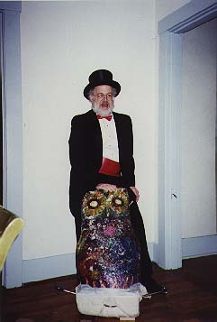
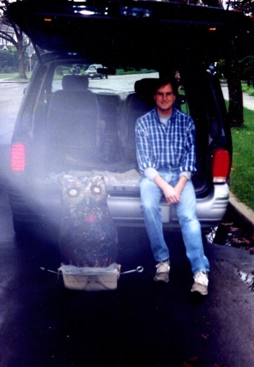
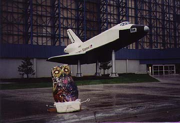
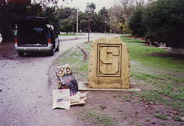
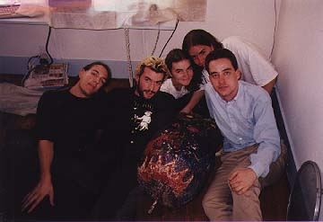
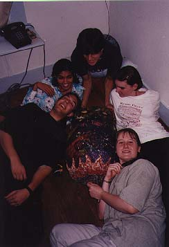
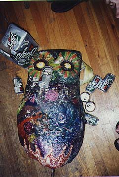
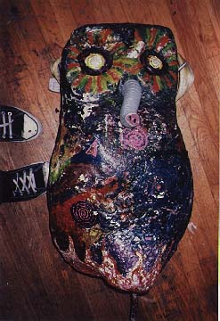
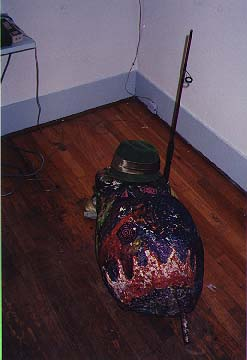

Dr. Demento is a Reed graduate whose international radio show contains every novelty tune you've ever heard of. He was easy to get for the photo shoot.

Another Reed alum, Steve Jobs, was a little harder to get to, but was happy to pose for a quick photo in between phone calls at home.

Among other shots on our trip with the bird to the Bay Area, we dragged it to Jet Propulsion Labs and Stanford University.
 
These are the members of the Doyle Owl Patrol. From left in the first picture: Justin Campbell, Colin McCluney, Greta Vanderbeek, Brent Miller, and the author of this page. Reed Balmer (top) and Christina Holzer (bottom) appear in the second photo (along with a non-DOP friend). Honorary members Tricia Pancio and Brett Rogers do not appear.
 
The following photos (and others) were on the back of the trading cards made by the Doyle Owl Patrol. We used whatever junk we had lying around as props to pose the owl with.
  